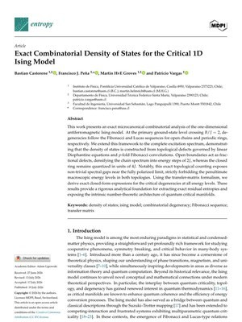
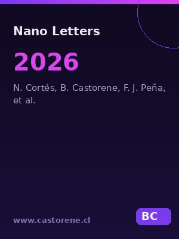
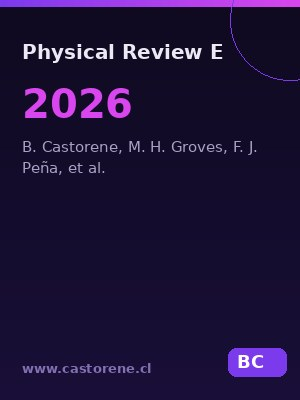
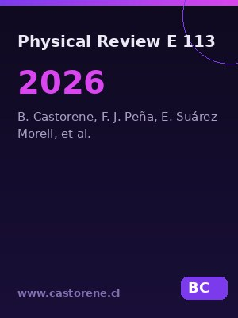
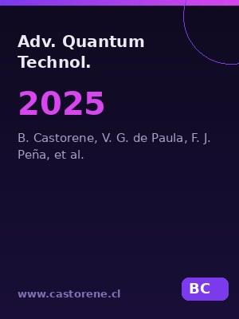
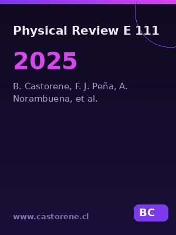
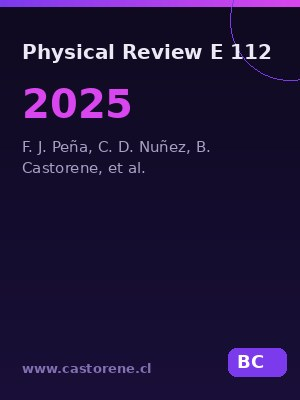
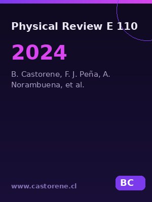
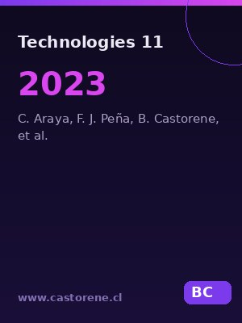

2026Exact Combinatorial Density of States for the Critical 1D Ising Model
B. Castorene, F. J. Peña, M. H. Groves, P. Vargas
Entropy 28, 821 (2026) · Open Access

2026Thermal Hofstadter Butterflies
N. Cortés, B. Castorene, F. J. Peña, D. Melo, S. E. Ulloa, P. Vargas
Nano Letters (2026)

2026Caloric phenomena and Stirling-cycle performance in Heisenberg–Kitaev magnon systems
B. Castorene, M. HvE Groves, F. J. Peña, N. Vidal-Silva, M. Letelier, R. E. Troncoso, F. Barra, P. Vargas
Physical Review E 114, 014132 (2026)

2026Reaching maximum efficiency in quantum Stirling engines using multilayer graphene
B. Castorene, F. J. Peña, E. Suárez Morell, C. Lewenkopf, M. H. Groves, N. Cortés, P. Vargas
Physical Review E 113, 044126 (2026)

2025Quantum Level-Crossing Induced by Anisotropy in Spin-1 Heisenberg Dimers: Applications to Quantum Stirling Engines
B. Castorene, V. G. de Paula, F. J. Peña, C. Cruz, M. Reis, P. Vargas
Advanced Quantum Technologies 8.10, e2500204 (2025)

2025Entropy, entanglement, and susceptibility of three qubits near quantum criticality
B. Castorene, F. J. Peña, A. Norambuena, S. E. Ulloa, C. Araya, P. Vargas
Physical Review E 111.3, 034118 (2025)

2025Ratio between Seebeck coefficient and entropy per particle as a tool for elementary charge determination
F. J. Peña, C. D. Nuñez, B. Castorene, M. Aguilera, N. Cortés, P. Vargas
Physical Review E 112, 065508 (2025)

2024Effects of magnetic anisotropy on three-qubit antiferromagnetic thermal machines
B. Castorene, F. J. Peña, A. Norambuena, S. E. Ulloa, C. Araya, P. Vargas
Physical Review E 110.4, 044135 (2024)

2023Magnetic Stirling Cycle for Qubits with Anisotropy near the Quantum Critical Point
C. Araya, F. J. Peña, A. Norambuena, B. Castorene, P. Vargas
Technologies 11.6, 169 (2023)